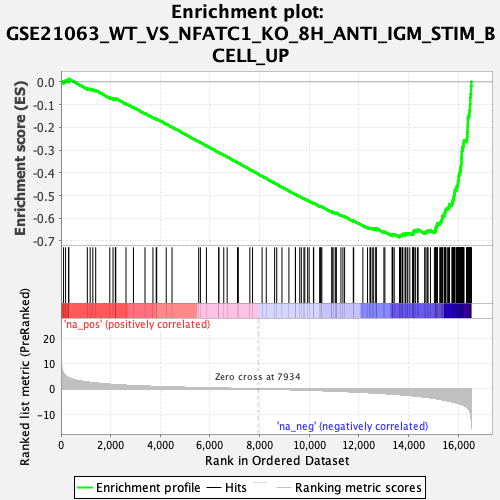
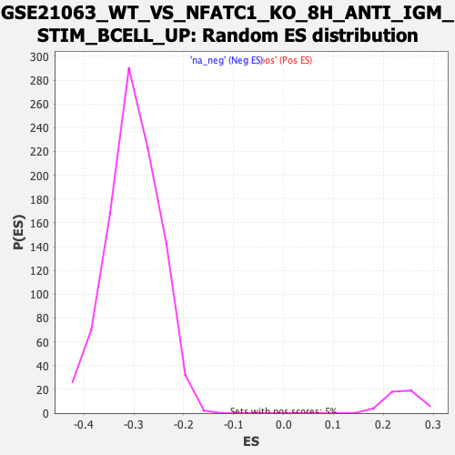

| | | Dataset | DE_genes2 |
| Phenotype | NoPhenotypeAvailable |
| Upregulated in class | na_neg |
| GeneSet | GSE21063_WT_VS_NFATC1_KO_8H_ANTI_IGM_STIM_BCELL_UP |
| Enrichment Score (ES) | -0.68310016 |
| Normalized Enrichment Score (NES) | -2.270697 |
| Nominal p-value | 0.0 |
| FDR q-value | 0.0 |
| FWER p-Value | 0.0 |
Table: GSEA Results Summary

Fig 1: Enrichment plot: GSE21063_WT_VS_NFATC1_KO_8H_ANTI_IGM_STIM_BCELL_UP
Profile of the Running ES Score & Positions of GeneSet Members on the Rank Ordered List
| PROBE | GENE SYMBOL | GENE_TITLE | RANK IN GENE LIST | RANK METRIC SCORE | RUNNING ES | CORE ENRICHMENT | | 1 | STYXL1 | | | 103 | 5.980 | 0.0033 | No |
| 2 | IFI27L1 | | | 185 | 5.173 | 0.0067 | No |
| 3 | SERPINB6 | | | 309 | 4.401 | 0.0063 | No |
| 4 | PHPT1 | | | 312 | 4.383 | 0.0132 | No |
| 5 | MAPKAPK3 | | | 1061 | 2.652 | -0.0282 | No |
| 6 | SRI | | | 1175 | 2.500 | -0.0311 | No |
| 7 | ATP6V1B2 | | | 1282 | 2.376 | -0.0338 | No |
| 8 | AKIP1 | | | 1397 | 2.270 | -0.0371 | No |
| 9 | SDC4 | | | 1965 | 1.784 | -0.0689 | No |
| 10 | GZMA | | | 2095 | 1.687 | -0.0741 | No |
| 11 | DCPS | | | 2189 | 1.628 | -0.0771 | No |
| 12 | FARS2 | | | 2199 | 1.621 | -0.0751 | No |
| 13 | ACAP1 | | | 2202 | 1.618 | -0.0726 | No |
| 14 | TSPAN5 | | | 2618 | 1.376 | -0.0957 | No |
| 15 | DNAJC18 | | | 2917 | 1.231 | -0.1120 | No |
| 16 | VANGL1 | | | 3383 | 1.045 | -0.1387 | No |
| 17 | INPP4B | | | 3703 | 0.929 | -0.1567 | No |
| 18 | GM2A | | | 3834 | 0.885 | -0.1633 | No |
| 19 | GMDS | | | 3855 | 0.879 | -0.1631 | No |
| 20 | NCF4 | | | 4238 | 0.766 | -0.1852 | No |
| 21 | NCALD | | | 4471 | 0.700 | -0.1983 | No |
| 22 | RHEBL1 | | | 5545 | 0.439 | -0.2632 | No |
| 23 | TUBB | | | 5614 | 0.424 | -0.2666 | No |
| 24 | BDH1 | | | 5856 | 0.374 | -0.2808 | No |
| 25 | HCFC1 | | | 6353 | 0.274 | -0.3107 | No |
| 26 | FABP5 | | | 6357 | 0.273 | -0.3104 | No |
| 27 | DUSP6 | | | 6555 | 0.233 | -0.3221 | No |
| 28 | CALM3 | | | 6692 | 0.204 | -0.3301 | No |
| 29 | LIMA1 | | | 7108 | 0.132 | -0.3552 | No |
| 30 | CSF1 | | | 7141 | 0.127 | -0.3570 | No |
| 31 | SLC27A2 | | | 7606 | 0.047 | -0.3853 | No |
| 32 | CBR3 | | | 7714 | 0.030 | -0.3918 | No |
| 33 | TMEM106C | | | 8099 | -0.026 | -0.4152 | No |
| 34 | ATF3 | | | 8267 | -0.051 | -0.4254 | No |
| 35 | TESC | | | 8603 | -0.110 | -0.4457 | No |
| 36 | KCNK5 | | | 8688 | -0.128 | -0.4506 | No |
| 37 | PRKCB | | | 8899 | -0.170 | -0.4632 | No |
| 38 | ACOT13 | | | 9179 | -0.234 | -0.4798 | No |
| 39 | ITGB7 | | | 9438 | -0.300 | -0.4951 | No |
| 40 | RNF187 | | | 9444 | -0.302 | -0.4950 | No |
| 41 | POLA2 | | | 9615 | -0.343 | -0.5048 | No |
| 42 | NUP210 | | | 9679 | -0.363 | -0.5081 | No |
| 43 | GPT2 | | | 9783 | -0.394 | -0.5137 | No |
| 44 | AP2B1 | | | 9819 | -0.404 | -0.5152 | No |
| 45 | MBOAT1 | | | 9933 | -0.438 | -0.5214 | No |
| 46 | WDYHV1 | | | 9994 | -0.459 | -0.5244 | No |
| 47 | BLVRB | | | 10166 | -0.514 | -0.5340 | No |
| 48 | RAP1GDS1 | | | 10178 | -0.518 | -0.5338 | No |
| 49 | ALG8 | | | 10418 | -0.591 | -0.5475 | No |
| 50 | GPRIN3 | | | 10443 | -0.601 | -0.5480 | No |
| 51 | RTCA | | | 10473 | -0.611 | -0.5488 | No |
| 52 | POC1A | | | 10504 | -0.626 | -0.5496 | No |
| 53 | LRRC20 | | | 10908 | -0.769 | -0.5730 | No |
| 54 | DOCK2 | | | 10912 | -0.770 | -0.5719 | No |
| 55 | THOP1 | | | 10958 | -0.785 | -0.5734 | No |
| 56 | DERA | | | 11042 | -0.821 | -0.5772 | No |
| 57 | CDPF1 | | | 11076 | -0.833 | -0.5779 | No |
| 58 | CCDC50 | | | 11084 | -0.836 | -0.5769 | No |
| 59 | C17orf58 | | | 11273 | -0.914 | -0.5870 | No |
| 60 | FAF1 | | | 11354 | -0.950 | -0.5903 | No |
| 61 | CLN6 | | | 11421 | -0.978 | -0.5928 | No |
| 62 | MTHFD1L | | | 11771 | -1.116 | -0.6123 | No |
| 63 | ENO3 | | | 11788 | -1.126 | -0.6115 | No |
| 64 | ATG5 | | | 12158 | -1.310 | -0.6319 | No |
| 65 | TMEM121 | | | 12345 | -1.398 | -0.6411 | No |
| 66 | DTYMK | | | 12442 | -1.447 | -0.6446 | No |
| 67 | RBBP8 | | | 12469 | -1.463 | -0.6438 | No |
| 68 | HIRIP3 | | | 12534 | -1.493 | -0.6453 | No |
| 69 | TMEM237 | | | 12593 | -1.530 | -0.6464 | No |
| 70 | CENPL | | | 12686 | -1.583 | -0.6495 | No |
| 71 | E2F8 | | | 12689 | -1.584 | -0.6471 | No |
| 72 | CCNE1 | | | 12690 | -1.585 | -0.6445 | No |
| 73 | UCK2 | | | 13004 | -1.774 | -0.6608 | No |
| 74 | KIF22 | | | 13043 | -1.792 | -0.6602 | No |
| 75 | SAE1 | | | 13334 | -1.977 | -0.6748 | No |
| 76 | HMGB3 | | | 13350 | -1.994 | -0.6725 | No |
| 77 | CENPO | | | 13365 | -2.007 | -0.6701 | No |
| 78 | PLD6 | | | 13419 | -2.036 | -0.6701 | No |
| 79 | SFXN1 | | | 13633 | -2.189 | -0.6796 | Yes |
| 80 | HYLS1 | | | 13646 | -2.197 | -0.6768 | Yes |
| 81 | WDR12 | | | 13672 | -2.216 | -0.6747 | Yes |
| 82 | MNAT1 | | | 13731 | -2.265 | -0.6746 | Yes |
| 83 | PSMD14 | | | 13753 | -2.288 | -0.6722 | Yes |
| 84 | E2F7 | | | 13768 | -2.300 | -0.6694 | Yes |
| 85 | MCM5 | | | 13861 | -2.378 | -0.6712 | Yes |
| 86 | CKS1B | | | 13865 | -2.382 | -0.6675 | Yes |
| 87 | DLAT | | | 13937 | -2.442 | -0.6679 | Yes |
| 88 | DHFR | | | 13968 | -2.471 | -0.6658 | Yes |
| 89 | ASF1B | | | 14048 | -2.550 | -0.6665 | Yes |
| 90 | TYMS | | | 14161 | -2.652 | -0.6691 | Yes |
| 91 | MTHFD1 | | | 14176 | -2.666 | -0.6656 | Yes |
| 92 | DMC1 | | | 14196 | -2.689 | -0.6624 | Yes |
| 93 | TMEM14A | | | 14204 | -2.696 | -0.6585 | Yes |
| 94 | SAP30 | | | 14214 | -2.704 | -0.6547 | Yes |
| 95 | ERI1 | | | 14282 | -2.766 | -0.6544 | Yes |
| 96 | FAM83D | | | 14362 | -2.844 | -0.6546 | Yes |
| 97 | LRR1 | | | 14381 | -2.866 | -0.6511 | Yes |
| 98 | LACTB2 | | | 14645 | -3.178 | -0.6621 | Yes |
| 99 | UBE2T | | | 14697 | -3.240 | -0.6599 | Yes |
| 100 | ZEB1-AS1 | | | 14749 | -3.304 | -0.6577 | Yes |
| 101 | AUH | | | 14783 | -3.339 | -0.6544 | Yes |
| 102 | LMNB2 | | | 14879 | -3.473 | -0.6546 | Yes |
| 103 | TACC3 | | | 15038 | -3.698 | -0.6583 | Yes |
| 104 | CDC25A | | | 15082 | -3.764 | -0.6549 | Yes |
| 105 | SPC24 | | | 15084 | -3.765 | -0.6489 | Yes |
| 106 | CKS2 | | | 15086 | -3.767 | -0.6428 | Yes |
| 107 | DONSON | | | 15105 | -3.791 | -0.6378 | Yes |
| 108 | SUV39H2 | | | 15132 | -3.824 | -0.6333 | Yes |
| 109 | XPOT | | | 15155 | -3.853 | -0.6284 | Yes |
| 110 | TFDP1 | | | 15156 | -3.856 | -0.6222 | Yes |
| 111 | SNX5 | | | 15253 | -4.019 | -0.6216 | Yes |
| 112 | RAD51 | | | 15283 | -4.088 | -0.6168 | Yes |
| 113 | CHEK2 | | | 15311 | -4.128 | -0.6118 | Yes |
| 114 | SPAG5 | | | 15339 | -4.181 | -0.6067 | Yes |
| 115 | EZH2 | | | 15352 | -4.214 | -0.6006 | Yes |
| 116 | GGH | | | 15362 | -4.223 | -0.5944 | Yes |
| 117 | DLEU1 | | | 15374 | -4.250 | -0.5882 | Yes |
| 118 | RAD54L | | | 15435 | -4.365 | -0.5848 | Yes |
| 119 | YEATS4 | | | 15445 | -4.381 | -0.5783 | Yes |
| 120 | PSAT1 | | | 15468 | -4.426 | -0.5725 | Yes |
| 121 | VRK1 | | | 15477 | -4.445 | -0.5658 | Yes |
| 122 | TCEA1 | | | 15502 | -4.486 | -0.5601 | Yes |
| 123 | SKA2 | | | 15559 | -4.611 | -0.5561 | Yes |
| 124 | AURKA | | | 15607 | -4.737 | -0.5513 | Yes |
| 125 | CCNB1 | | | 15643 | -4.796 | -0.5457 | Yes |
| 126 | KIFC1 | | | 15645 | -4.799 | -0.5380 | Yes |
| 127 | BIRC5 | | | 15741 | -4.998 | -0.5358 | Yes |
| 128 | PRPS2 | | | 15766 | -5.039 | -0.5291 | Yes |
| 129 | CPOX | | | 15769 | -5.044 | -0.5211 | Yes |
| 130 | RFC4 | | | 15807 | -5.149 | -0.5151 | Yes |
| 131 | CDK1 | | | 15810 | -5.156 | -0.5069 | Yes |
| 132 | MCM6 | | | 15829 | -5.218 | -0.4996 | Yes |
| 133 | NCAPH | | | 15843 | -5.247 | -0.4919 | Yes |
| 134 | PRIM1 | | | 15856 | -5.276 | -0.4842 | Yes |
| 135 | TPX2 | | | 15859 | -5.288 | -0.4758 | Yes |
| 136 | FAM126A | | | 15921 | -5.449 | -0.4707 | Yes |
| 137 | ORC6 | | | 15923 | -5.453 | -0.4620 | Yes |
| 138 | CHEK1 | | | 15965 | -5.552 | -0.4556 | Yes |
| 139 | TMA16 | | | 15984 | -5.620 | -0.4476 | Yes |
| 140 | PARPBP | | | 15988 | -5.636 | -0.4387 | Yes |
| 141 | DBF4 | | | 16002 | -5.664 | -0.4304 | Yes |
| 142 | PIF1 | | | 16018 | -5.727 | -0.4221 | Yes |
| 143 | RFC3 | | | 16020 | -5.728 | -0.4129 | Yes |
| 144 | MAD2L1 | | | 16043 | -5.805 | -0.4049 | Yes |
| 145 | KIF2C | | | 16061 | -5.848 | -0.3965 | Yes |
| 146 | ECT2 | | | 16082 | -5.906 | -0.3882 | Yes |
| 147 | KIF18B | | | 16087 | -5.923 | -0.3789 | Yes |
| 148 | PRC1 | | | 16103 | -5.960 | -0.3702 | Yes |
| 149 | CCNE2 | | | 16115 | -5.986 | -0.3612 | Yes |
| 150 | AURKB | | | 16120 | -6.007 | -0.3518 | Yes |
| 151 | UCHL5 | | | 16127 | -6.042 | -0.3424 | Yes |
| 152 | MELK | | | 16129 | -6.045 | -0.3327 | Yes |
| 153 | TIPIN | | | 16138 | -6.072 | -0.3234 | Yes |
| 154 | BUB1 | | | 16142 | -6.084 | -0.3138 | Yes |
| 155 | SKA1 | | | 16146 | -6.104 | -0.3042 | Yes |
| 156 | DIAPH3 | | | 16163 | -6.183 | -0.2952 | Yes |
| 157 | FBXO5 | | | 16169 | -6.210 | -0.2855 | Yes |
| 158 | HJURP | | | 16210 | -6.380 | -0.2776 | Yes |
| 159 | GINS2 | | | 16213 | -6.392 | -0.2675 | Yes |
| 160 | DTL | | | 16230 | -6.481 | -0.2580 | Yes |
| 161 | BUB1B | | | 16335 | -7.102 | -0.2529 | Yes |
| 162 | ANLN | | | 16350 | -7.214 | -0.2421 | Yes |
| 163 | ELOVL6 | | | 16362 | -7.300 | -0.2311 | Yes |
| 164 | ZNF367 | | | 16367 | -7.350 | -0.2194 | Yes |
| 165 | CDC6 | | | 16375 | -7.439 | -0.2079 | Yes |
| 166 | CCNA2 | | | 16376 | -7.439 | -0.1959 | Yes |
| 167 | NUF2 | | | 16382 | -7.475 | -0.1842 | Yes |
| 168 | CDCA2 | | | 16385 | -7.530 | -0.1721 | Yes |
| 169 | EXO1 | | | 16387 | -7.570 | -0.1600 | Yes |
| 170 | KIF11 | | | 16409 | -7.860 | -0.1486 | Yes |
| 171 | TTK | | | 16444 | -8.189 | -0.1375 | Yes |
| 172 | KIF15 | | | 16449 | -8.254 | -0.1244 | Yes |
| 173 | MCM10 | | | 16471 | -8.676 | -0.1117 | Yes |
| 174 | DEPDC1B | | | 16474 | -8.791 | -0.0977 | Yes |
| 175 | DLGAP5 | | | 16482 | -9.145 | -0.0834 | Yes |
| 176 | MKI67 | | | 16483 | -9.193 | -0.0686 | Yes |
| 177 | TOP2A | | | 16497 | -9.873 | -0.0535 | Yes |
| 178 | ASPM | | | 16510 | -10.824 | -0.0367 | Yes |
| 179 | CDCA7 | | | 16514 | -11.289 | -0.0187 | Yes |
| 180 | NDC80 | | | 16527 | -12.233 | 0.0002 | Yes |
Table: GSEA details [plain text format]

Fig 2: GSE21063_WT_VS_NFATC1_KO_8H_ANTI_IGM_STIM_BCELL_UP: Random ES distribution
Gene set null distribution of ES for GSE21063_WT_VS_NFATC1_KO_8H_ANTI_IGM_STIM_BCELL_UP